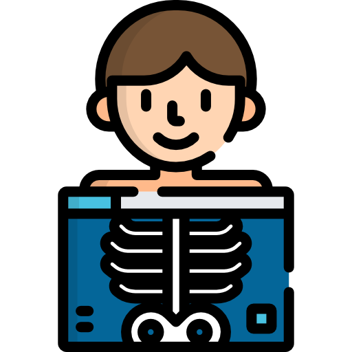

|
Delang Medical SystemsUna compañía con más de 10 años de experiencia tanto en instituciones públicas como privadas. Somos una compañía especializada en venta, instalación y mantenimiento de equipos médicos y accesorios necesarios para el correcto funcionamiento de estos. Hemos evolucionado hacia la era de las soluciones digitales, representando marcas premium. Además ofrecemos servicios de asesoría e implementación de sistemas de Radilogía Digital a la medida para todo tipo de uso. |
 |
 |  |
|
Cuidado de la Mujer |
Equipo Radiológico |
IT Médico |
Simuladores Médicos |
| Equipos radiológicos para el cuidado integral de la salud de la mujer y la prevención de enfermedades | Soluciones completas tipo Piso-Techo, Soluciones Cielíticas, Mesas, Buckys y todo lo necesario para brindar servicio de Radiología Médica | Soluciones PACS/RIS totalmente modulares con altísima calidad de imagen y funciones avanzadas, acceso remoto y mucho más | Simuladores médicos para propulsar tu experiencia de entrenamiento y capacitación de personal. |